PRO-1769 Bike camera segmentation
目次
ソースコードのダウンロード
ソースコードファイルをダウンロード
Step 1: GitLab上でプロジェクトを開き、Phase2ブランチに切り替えます

Step 2: Code を選択
Step 3: zip を選択してソースコードをPCにダウンロード

クイックスタート
Component |
Technology |
|---|---|
Programming Language |
Python 3.x |
Computer Vision Library |
OpenCV (cv2) |
Operating System |
Linux-based (userdata path) |
Camera Interface |
Video4Linux (V4L) |
アプリインストール準備ガイド
Windows OSでの環境準備
Android SDK Platform-Toolsを使用
SDK Platform-Toolsのダウンロード:
アクセス: Platform Tool
Windows OS向けのアプリケーションファイルをダウンロード
PATHへ追加:
Win + Xを押すSystemを選択Advanced system settingsを選択Environment VariablesをクリックSystem variables内のPathを選択し、EditをクリックNewをクリックしてC:\\platform-toolsを追加OKをクリック
インストール確認
Windowsボタンを押すPowerShellと検索Enterを押すアプリケーション画面で以下のコマンドを実行:
adb version画面にアプリケーション情報が表示されれば、インストールは正常に完了しています
Linux（Ubuntu/Debian）での環境準備
パッケージリストを更新
sudo apt update
adbをインストール
sudo apt install adb -y
バージョン確認
adb version
AI Unit用アプリのインストール
1. プログラムをPCにダウンロード
ソースコードを以下からダウンロード: AI Unit Application
2. ソースコードを解凍
PCにあるツールを使用して、ダウンロードしたファイルを解凍
解凍後のフォルダ構成:
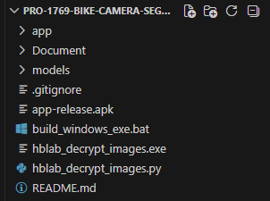
ファイル/フォルダ名 |
説明 |
|---|---|
app |
AI Unitアプリケーションを格納 |
Document |
プロジェクトドキュメントを格納 |
models |
学習済みモデルを格納 |
build_windows_exe.bat |
Windows用exeファイルをビルドするアプリケーション |
hblab_decrypt_images.exe |
AI Unitから取得した画像を復号するアプリケーション |
hblab_decrypt_images.py |
画像復号アプリケーションのソースコード |
README.md |
ソースコードダウンロード手順書 |
3. デバイスとPCの接続
電源を接続し、USBポート経由でデバイスをPCに接続します。
PCでTerminalまたはPowerShellを起動します。
以下のコマンドでデバイスとPCの接続を確認します:
adb devices
接続失敗の場合:
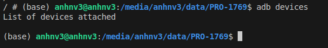
接続成功の場合:
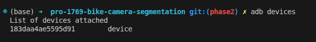
4. アプリのインストール
Terminalにデバイスが表示されたら、以下のコマンドを実行:
adb push {path/to/service/code/file} userdata/
デバイスを再起動
方法1: 電源を抜き差しする
方法2: Consoleで以下のコマンドを実行:
adb shell reboot
デバイスが正常に起動していることを確認
ログファイルの確認:
PCのConsoleで以下を実行:
adb pull userdata/app\_log.txt {path/to/save (optional)}
5. デバイスからPCへ画像を取得
データ取得後、以下手順で画像をPCへ取得します:
Step 1: デバイスとPCの接続と同様に接続
Step 2: 以下コマンドを実行して画像をダウンロード:
adb pull userdata/captures {path/to/save (optional)}
Note:
adb pull: デバイス → PC にダウンロード
adb push: PC → デバイス にアップロード
6. 画像の復号
取得した画像は .enc（暗号化形式）です。閲覧前に復号が必要です。
pull後、capturesフォルダ内に captures1, captures2, … が作成されるため、対象フォルダを選択して復号します。
Windowsの場合 — decrypt_images.exe を使用:
decrypt_images.exeをダブルクリックするとCMDウィンドウが表示されます
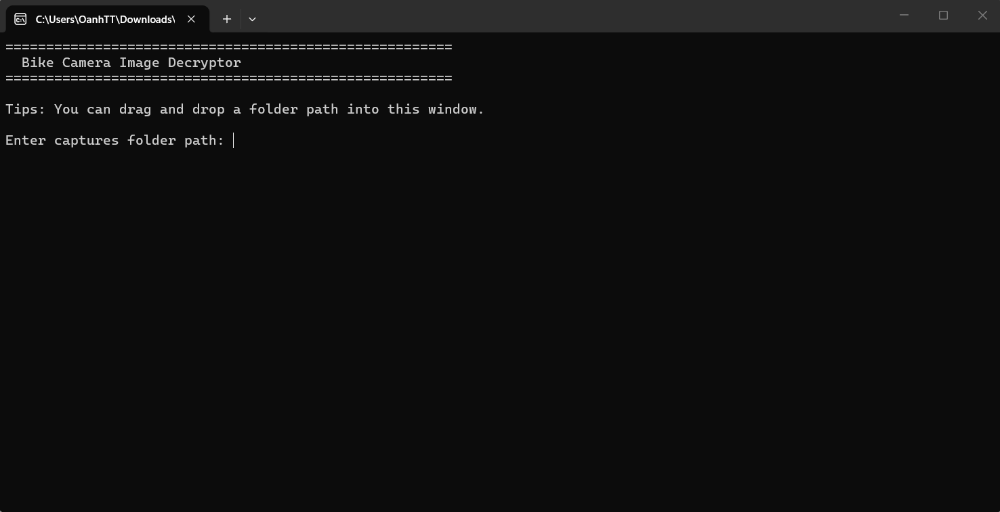
フォルダパスを入力（例）
C:\Users\user\Downloads\captures\captures2
秘密鍵ファイルパスを入力（例）:
C:\Users\user\Downloads\private_key.pem
復号後の画像は
captures2_decrypted\フォルダに自動保存されます
Linux/macOSの場合 — decrypt_images.pyを使用:
python decrypt_images.py captures/captures2 private_key.pem
復号後の画像は captures2_decrypted/ フォルダに保存されます
7. 画像の削除
方法1
Step 1: デバイスをパソコンに接続する (デバイスとPCの接続と同様に接続)
Step 2: 画像を格納しているフォルダを削除するため、以下のコマンドを実行:
adb shell "rm -r userdata/captures"
方法2
AI Unitのメモリが満杯になると、スマートフォンアプリに警告が表示されます。
アプリ画面上で「メモリを削除するか」の確認が表示され、ユーザーはAI Unit内の画像をすべて削除できます。
スマートフォンアプリのインストール
Step 1: アプリをスマートフォンにダウンロード
ソースコードをダウンロード・解凍後、apkファイルをスマートフォンへ転送
選択 |
説明 |
メリット |
|---|---|---|
方法1 |
USBでスマートフォンとPCを直接接続し、 |
そのままapkをインストール可能。 |
方法2 |
|
複数端末で同時にダウンロード可能 |
Step 2: アプリのインストール
apkファイルをダウンロード後、ファイルをタップします。
INSTALL を選択
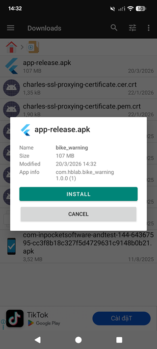
画面の指示に従って操作
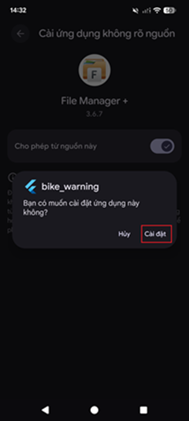
apkファイルは自動的にインストールされます。
アプリがスマートフォン内のファイルへアクセスできるよう、権限を付与してください
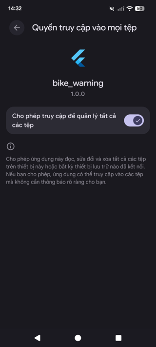
システム利用ガイド
事前準備
AI Unit用アプリをインストール後、デバイスに電源が供給されるとアプリは自動的に起動します。
アプリインストール後、ユーザーはアプリを起動します。
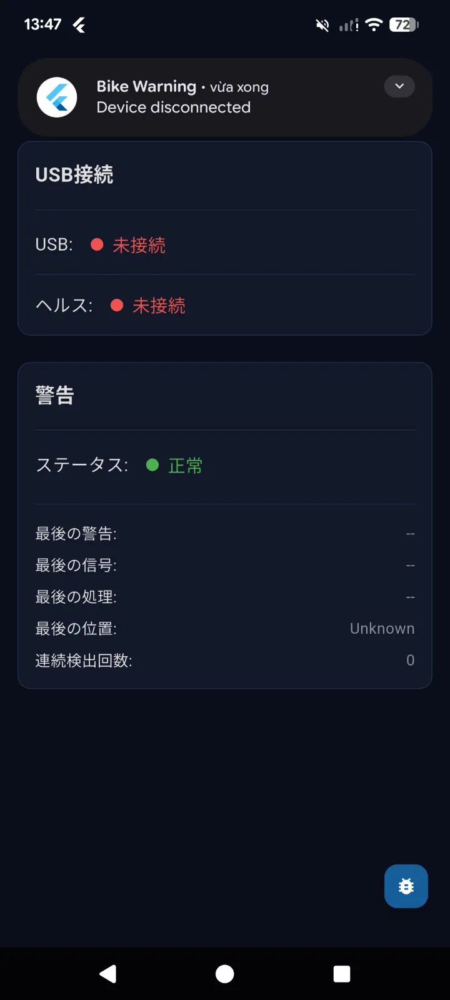
利用手順
デバイスのUSBポートとスマートフォンを接続します。
通知が表示されたら、OK を選択します。
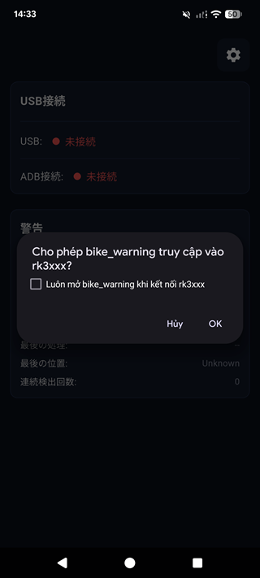
スマートフォンとアプリの接続が成功すると、USB接続およびADB接続の情報がアプリのホーム画面に表示されます。
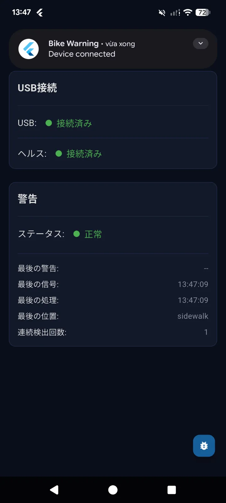
設定ガイド
本アプリでは動作設定の変更が可能です。
スマートフォンアプリ画面の ⚙️ を選択します。
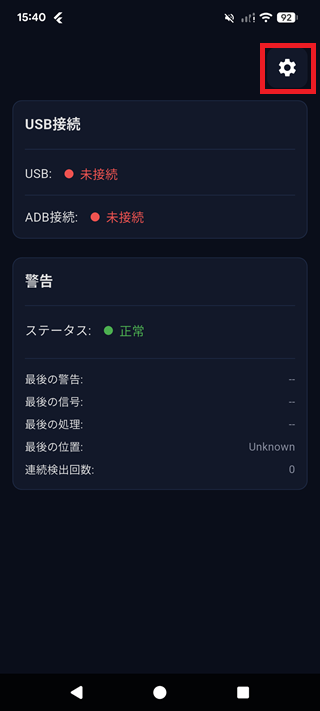
アプリの設定画面


No |
内容 |
値 |
|---|---|---|
1 |
AI Unitの設定ファイルを初回取得 |
取得結果は項目2および3に反映される |
2 |
AI Unitの動作モード選択 |
利用不可：AIユニットとスマートフォンアプリが未接続のため、デフォルトでは設定情報は未取得の状態となる。 |
3 |
|
単位: |
4 |
歩道の連続検知回数（この回数に達すると警告を発報） |
データ型: |
5 |
通知間隔（2回の警告間の時間）。本値は項目 3 × 4 の値より大きく設定する必要がある。 |
単位: |
6 |
スマートフォン画面に表示する警告テキスト |
テキスト形式で入力可能（任意入力） |
7 |
警告テキストのフォントを設定する |
選択式。対応フォント： |
8 |
警告テキストの文字サイズを設定する |
入力形式：数値入力 |
9 |
警告テキストの表示時間を設定する |
単位: |
10 |
フォント色および背景色を変更する |
選択式 |
11 |
警告テキストのプレビュー表示 |
プレビュー画像 |
12 |
設定内容を保存し、スマートフォンアプリに反映する |
エラー通知
スマートフォンアプリが警告を発する際、同時に画面にも通知が表示されます